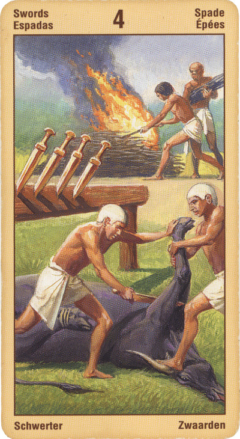

Четвёрка Мечей
Значение:Карта символизирует человека, решившего удалиться от мира. Он сдался, отказался от своих чувств, «похоронил себя заживо». Не нужно отгораживаться от мира, советует эта карта, лучше встать и выйти наружу, к людям, которые вас ждут.
Таким образом, в прямом положении эта Четверка рекомендует действовать, «выйти к людям».
Четверка Мечей может просто указывать на то, что для вас наступило время отдыха и оздоровления.
Четверка Мечей - это карта застоя, прерванной деятельности и вынужденного покоя. Мы вынуждены прервать активную деятельность, сделать паузу. Будем ли мы страдать или постараемся использовать эту паузу, чтобы разобраться с самими собой, зависит только от нас.
Речь идет о временной передышке перед новым броском. На уровне четверки мечей происходит своего рода отдых, излечение после борьбы заблуждений, связанных с тройкой мечей. Идеал, конечно, не достигнут, Бога не удалось свести на Землю, но уже изваян идол, и первичная симпатическая связь между божеством и его земным отражением уже установлена.
Четверка Мечей отражаетновый этап в вашем развитии. Та целенаправленная энергия, которую символизировала Тройка, уже растрачена вами на избранное дело. Образно выражаясь, волна поднялась и отхлынула, вы же остались если и не без сил, то, во всяком случае, уже без активного стремления к цели. Цель достигнута, и вы можете наслаждаться полученными результатами.
Таким образом, Четверка Мечей - символ застоя в делах. Все ваши попытки резко изменить существующий порядок вещей ни к чему не приведут: ведь для того, чтобы достичь чего-то стоящего, необходим большой запас энергии, способной пробить для вас стену препятствий.
Как уже было замечено, эту энергию вы растратили немного ранее, и теперь пришла пора отдохнуть и задуматься: удовлетворены ли вы результатами достигнутого? Или же ваша прежняя цель была иллюзорной и вы вновь жаждете чего-то, столь же на первый взгляд, привлекательного?
Что ж, Четверка Мечей дает вам время на раздумье. Она как бы предупреждает: до тех пор, пока вы не проанализируете и не осмыслите свои прошлые действия, будущее для вас останется «под замком».
Период изоляции подошел к концу. Возможно, вы поправляетесь после болезни и возвращаетесь к активной жизни. Если вы понесли финансовые потери, заболели или столкнусь с трудностями на личном фронте, то получить эту карту в раскладе крайне благоприятно, потому что она свидетельствует о том, что проявляя заботу и внимание, вы можете успешно справиться со сложившейся ситуацией.
Эта карта обещает близкую перемену к лучшему; мир после битвы, выздоровление после болезни; падение напряжения и восстановление спокойствия.
В перевернутом положениикарта четверка мечей означает несвоевременное действие. Человеку впору остановиться и подумать, а он бросается в бой. "Правильное действие в правильное время в правильном месте и с правильными людьми... приводит к правильным результатам" - Перевернутая четвека мечей символизирует пренебрежение этим принципом.
В перевернутом положении — тщательная эконо¬мия, благоразумное ведение хозяйства, осторожность, предостережение, возможно — жадность и желание большего.